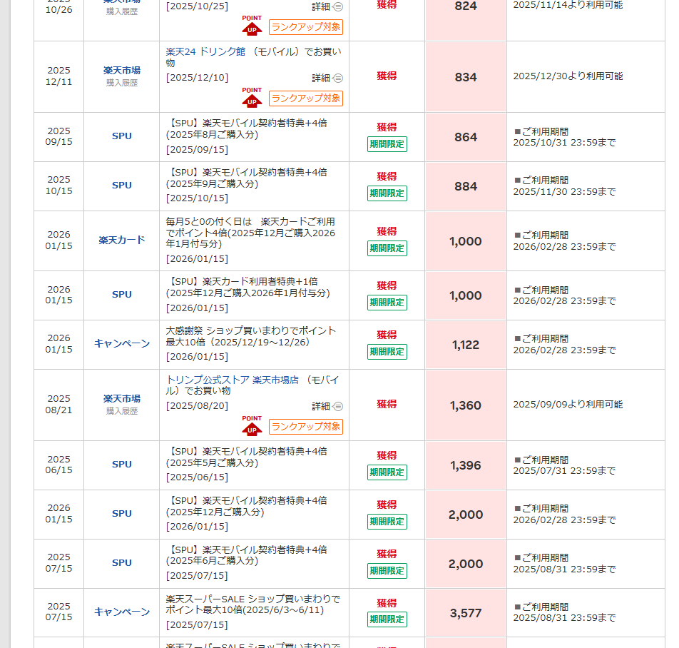
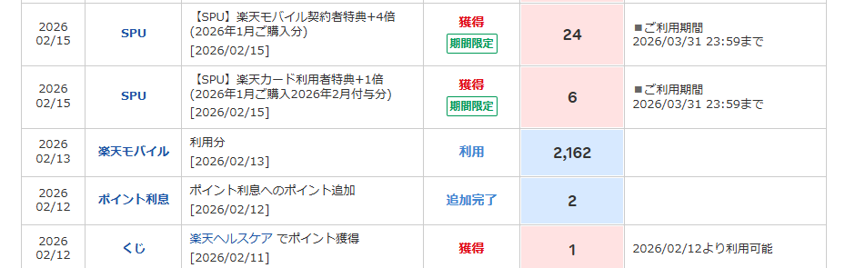

家計・リベ活
Finances
2026.06.02
スマホ代の請求がタダに！？
楽天モバイルの特典を使おう！！
Can Your Phone Bill Really Be ¥0?
Making the Most of Rakuten Mobile
※ 本記事にはアフィリエイト広告が含まれています。
楽天モバイルを使っているのに、楽天市場を使っていないのはもったいない！実は、楽天モバイルのユーザーは楽天市場でのポイント還元が優遇されていて、上手に活用するとスマホ代の支払いがまるごと0円になることもあります。
私が楽天市場を使い始めてから今までに獲得したポイントは累計27万ポイント以上。今回は、面倒くさがりの私でも続けられた、楽天経済圏の活用法をお伝えします。
📋 この記事でわかること
- 楽天市場でお得に買い物するタイミングと準備の手順
- 楽天モバイルを使うと楽天市場のポイントが優遇される理由
- スマホ代が月0円になった実績（スクショ公開）
- 獲得したポイントの賢い使い方
楽天市場との出会い
楽天市場はオンライン上の巨大なショッピングモールで、ほとんどの方がご存じだと思います。私は以前、日用品は実店舗―自宅から最寄りの薬局やホームセンター、スーパーなど―で購入していました。ネットショップは送料がかかるから絶対高くつく、と思い込んでいたのです。
ところが、リベラルアーツ大学の動画を通じて「楽天経済圏」というものを知り、上手に使えばお得に買い物できることを知りました。それをきっかけに実際に試してみたのが、私の楽天経済圏移住の始まりです。
私の楽天ポイント獲得実績
楽天市場を使い始めてから、毎年どのくらいポイントを獲得しているか公開します。達人のような買い方は一切していませんが、それでもこれだけ貯まりました。
| 年 | 獲得ポイント |
|---|
| 2019年 | 305 pt |
| 2020年 | 32,178 pt |
| 2021年 | 66,029 pt |
| 2022年 | 48,605 pt |
| 2023年 | 28,861 pt |
| 2024年 | 30,003 pt |
| 2025年 | 55,002 pt |
| 2026年（〜5/31） | 16,627 pt |
| 累計獲得 | 277,610 pt |
| 現在の残高（2026.5.31時点） | 27,761 pt |

楽天市場でお得に買い物するタイミング
楽天市場でのお得な買い物のタイミングは決まっています。このタイミングに合わせて購入するだけで、同じ買い物でも獲得ポイントが大きく変わります。
🎯 最優先（年4回）
楽天スーパーセール
3月・6月・9月・12月
買い回りでポイント最大UP
📅 毎月1日
ワンダフルデー
ポイント倍率アップ
まとめ買いに最適
📅 毎月18日
楽天市場の日
ポイント倍率アップ
定期購入品に活用
📅 5・0のつく日
5と0のつく日
複数のお店から
まとめ買いするときに
購入前の準備手順
楽天市場を上手に活用するには、購入当日だけでなく事前の準備が大切です。私が実践している手順を紹介します。
- 必要なものをリストアップするスーパーセール前月末までに、次のセールで購入が必要な日用品をリストアップしておきます。
- 最安値をチェックする暇な時間にAmazonや楽天でチェック。Amazonが安ければAmazonのお気に入りに、楽天が安ければ楽天のお気に入りリストに登録しておきます。
- 実店舗の価格も確認する出かけるついでに実店舗の価格もチェック。実店舗のセールで安いときは迷わず実店舗で購入し、リストから外します。
- 39ライン適用店舗でまとめる1店舗で3,900円以上購入すれば送料無料になる「39ライン」適用店舗をなるべく選んで、同じ店でまとめて購入するように計画します。
- 購入当日は必ず事前エントリーを！これが一番重要です！購入当日、必ずキャンペーンへの事前エントリーを忘れずに行いましょう。これをするかしないかで獲得ポイント数が大きく変わります。
- カートに入れたらクーポンを確認レジに進む前に商品・店舗のクーポンを取得して適用させます。チェックアウト時にもクーポンが選択できるので忘れずに。
⚠️ 広告メールに注意！
キャンペーンにエントリーすると、もれなく大量の広告メールが届くようになります。チェックアウト時に「お店や楽天からのお得な情報をメールで受信する」チェックボックスが入っていることが多いので、必ず外しておきましょう。外し忘れても、楽天市場のアカウント設定からメール受信設定を変更できます。
楽天モバイルを使っているなら、もっとお得に
楽天モバイルのユーザーは2026年5月現在、楽天市場でのお買い物ポイントが4倍になるなど優遇されています。楽天モバイルを使い始めたばかりの方は、ぜひ楽天市場も活用してみてください。
さらに、楽天モバイルにはRakuten Linkアプリを使えば通話料が無料になるという、他にはないサービスがあります。固定電話や携帯電話など、たいていのところへ何分かけても無料です。通話の品質が少し気になることもありますが、私の母は東京や千葉のお友達とよく長電話をしていて、特に問題なく利用できています。
そして、楽天モバイルには3GB以下の低データ利用プラン（月1,078円〜）があります。私も母も外出時のスマホ利用はあまりなく、自宅のWi-Fiメインなので、1GBにも満たない月も多いくらいです。2人合わせて2,000円ちょっとの請求のことがほとんどでした。
🎉
スマホ代が月0円になることも！
楽天ポイントを使ってスマホ代の支払いに充てることができます。ポイントが貯まった月は、請求が実質0円になることもありました。
これが証拠！スマホ代0円の請求画面

楽天市場でコツコツ貯めたポイントを、スマホ代の支払いに充てることができます。ポイントが十分に貯まっている月は、このように請求が0円になります。通信費の節約と、お買い物のポイント還元が組み合わさって、家計の強い味方になってくれます。
獲得したポイントはどこで使う？
せっかく貯めたポイントも、使い忘れると失効してしまうので気をつけましょう。実は、楽天市場の支払いにポイントを使うのは少しもったいないのです。楽天市場でポイントを使ってしまうと、その分だけ新たなポイントが獲得できなくなってしまうためです。
💡 ポイントは実店舗で使うのがおすすめ
楽天ポイントが使える実店舗は意外とたくさんあります。スマホに楽天ペイのアプリを入れて楽天カードと連携させておくと、さまざまなお店でポイント払いができます。失効しそうなポイントがあるときに特に便利です。
私がよく使っている店舗は、ツルハドラッグ・ジョーシン電気・ドトール・ミスタードーナツなどです。ポイントを付与してくれるお店も多いので、使いながらまた貯まるのも嬉しいポイントです。
どこにも出かけたくない日は、楽天ブックスで欲しかった本を購入するのもおすすめです。3,900円未満でも送料無料なので、失効させるよりずっとお得です。
楽天カードとの組み合わせでさらにお得に
楽天モバイルの支払い先を楽天カードにするだけで、楽天市場でのお買い物のポイント獲得数がさらに1倍アップします。設定はとても簡単なので、楽天モバイルを使っている方はぜひ設定しておきましょう。
正直なところ、私はAmazonでの日用品購入もよくしているので、楽天経済圏にどっぷりというわけではありません。ただ、せっかく楽天モバイルを利用しているのなら、楽天経済圏を上手に活用するとお得です。
まとめ
楽天モバイルを使っているなら、楽天市場・楽天カード・楽天ペイを組み合わせた楽天経済圏の活用がおすすめです。達人のような複雑な使い方をしなくても、買い回りのタイミングを押さえて事前エントリーを忘れなければ、コツコツとポイントが貯まっていきます。
貯まったポイントでスマホ代が0円になる月があると、なんだか得した気分になってとても嬉しいです😊 みなさんもぜひ試してみてください🍎
If you're already using Rakuten Mobile, you're missing out if you're not also shopping on Rakuten Ichiba. Rakuten Mobile users get boosted point rates on purchases — and with enough points, your phone bill can drop to ¥0.
I've earned over 277,000 Rakuten points since I started using Rakuten Ichiba. Here's how I do it — without being a points expert.
📋 What you'll find in this article
- When and how to shop on Rakuten for maximum points
- Why Rakuten Mobile users get extra benefits on Rakuten shopping
- Real screenshot: my phone bill at ¥0
- How to use points wisely (and avoid letting them expire)
How I discovered Rakuten's ecosystem
I used to buy all my household goods at physical stores — I assumed online shopping would be more expensive because of delivery fees. After discovering the Riberazu University YouTube channel, I learned about Japan's "Rakuten economic zone" (楽天経済圏) and decided to give it a try. It turned out to be genuinely more affordable than I expected.
My Rakuten points history
| Year | Points earned |
|---|
| 2019 | 305 pt |
| 2020 | 32,178 pt |
| 2021 | 66,029 pt |
| 2022 | 48,605 pt |
| 2023 | 28,861 pt |
| 2024 | 30,003 pt |
| 2025 | 55,002 pt |
| 2026 (to May 31) | 16,627 pt |
| Total earned | 277,610 pt |
| Current balance (as of May 31, 2026) | 27,761 pt |
Best times to shop on Rakuten
🎯 Top priority (4× a year)
Rakuten Super Sale
March / June / September / December
📅 1st of every month
Wonderful Day
Boosted point rate
📅 18th of every month
Rakuten Ichiba Day
Boosted point rate
📅 Days ending in 0 or 5
5 & 0 Days
Good for multi-shop purchases
My shopping preparation routine
- List what you needBefore each Super Sale, list the household items you'll need to buy.
- Compare pricesCheck Amazon and Rakuten in your spare time. Add items to your wish list on whichever is cheaper.
- Check local stores tooWhen you're out, check physical store prices. If a local sale beats online prices, buy there and remove from your list.
- Choose ¥3,900-free-shipping storesLook for stores with the "39 line" — free shipping on orders over ¥3,900 — and plan purchases accordingly.
- Register for campaigns on the day — don't skip this!Always enter available campaigns before purchasing. This single step makes a significant difference in how many points you earn.
- Apply coupons before checkoutCollect store and product coupons, and make sure they're applied at checkout.
⚠️ Watch out for email marketing
Entering campaigns automatically opts you into promotional emails — sometimes a lot of them. At checkout, uncheck the "receive emails" box. If you forget, you can adjust your email preferences in your Rakuten account settings.
Extra benefits for Rakuten Mobile users
As of May 2026, Rakuten Mobile users earn 4× the standard points on Rakuten Ichiba purchases. Combined with the free Rakuten Link calling app and the low-usage tier (from ¥1,078/month for under 3 GB), the monthly phone bill becomes very manageable.
🎉
Phone bill: ¥0
By applying accumulated Rakuten points to your phone bill, it's possible to bring your monthly charge down to zero.
Proof: my ¥0 phone bill
How to use your points wisely
Don't let points expire — but also be careful about using them on Rakuten Ichiba itself, since you won't earn new points on the portion you pay with points. The smarter move is to use points at physical stores.
💡 Use points at physical stores with Rakuten Pay
Install the Rakuten Pay app and link it to your Rakuten Card. You can use points at a wide range of stores — including pharmacies, electronics shops, and cafés.
On days when you'd rather not go out, Rakuten Books is a great option — it offers free shipping with no minimum order, so it's a convenient way to use points before they expire.
In summary
If you're already using Rakuten Mobile, combining it with Rakuten Ichiba, Rakuten Card, and Rakuten Pay is a natural next step. You don't need to be a points expert — just shop at the right times, always register for campaigns, and use your points at physical stores. The phone bill may take care of itself. 🍎